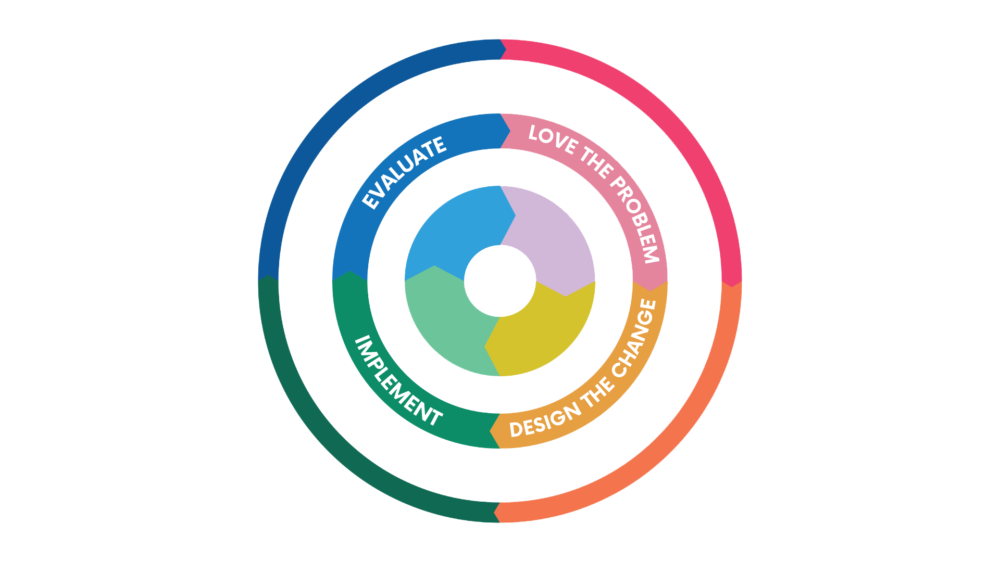

Reflect on the following to identify a social issue you are well-positioned to address:
Affinity: What social issues, people, or places do you personally care about or feel connected to based on your upbringing, hobbies, values, or relationships?
Proximity: How close are you to this issue—through lived experience, location, personal connections, or expertise?
Maximize Good:
What specific issue, demographic, and location are you in the best position to help?
Where is the need greatest?
Do you care enough to learn more about this issue, who it affects, and where it’s happening?
Decide on an Issue
After deciding on a social issue to address begin to work through the steps of the social impact cycle.
The Social Impact Cycle

Love the Problem
Care deeply about the issue—enough to commit to learning about it and working toward a solution.
Define the Problem:
Clearly identify the issue you're addressing. Create a focused title that includes the social issue, demographic affected, and geographic location to guide your research.
Conduct Research:
Start with secondary research. Then, conduct primary research as needed to fill in the gaps.
When to Move on:
When you have a clear and comprehensive understanding of the issue and it's many connected parts.
Design the Change
With a deep understanding of the issue, collaborate with those affected and others working on it to co-create an effective intervention plan.
Idea Generation:
Use human-centered design and rapid prototyping to brainstorm bold ideas. Start with extreme concepts, then refine them.
Intervention Planning:
Create a logic model outlining your path to change. Define long-term and short-term outcomes, key activities, outputs, and required resources.
When to Move On:
Move forward when you have a well-tested, research-backed plan tailored to the needs of those you're serving.
Implement
Now that you have a well thought out intervention predicted to make positive change, it is time to put it into action and measure it's impact.
Define Measurements:
Before testing make sure to define what chnages you are measuring and how, so that you can track progress and measure imapct at a later stage.
Start Small:
Before going all in with you intervention, you want to test weither it will have desirable outcomes or not. Start small and scale up as you see success.
When to Move on:
When your intervention has been thoroughly implemented and there is enough data gathered to draw conclusions on impact.
Evaluate
When proper testing and measurment has been done, take ample time to determine whether your intervention was succesfull or not and make needed adjustments.
Determine Impact:
Impact is the portion of change that was directly caused by your intervention and efforts, both good and bad. Not all change is from your efforts, analyze data to determine what your impact was.
Make Adjustments:
Based on results decide whether to continue, discontinue, or scale up your intervention. Make refinements to increase positive impact and decrease negative impact.
When to Move on:
When you have clear results of what impact your efforts have already had, and what steps forward are best.